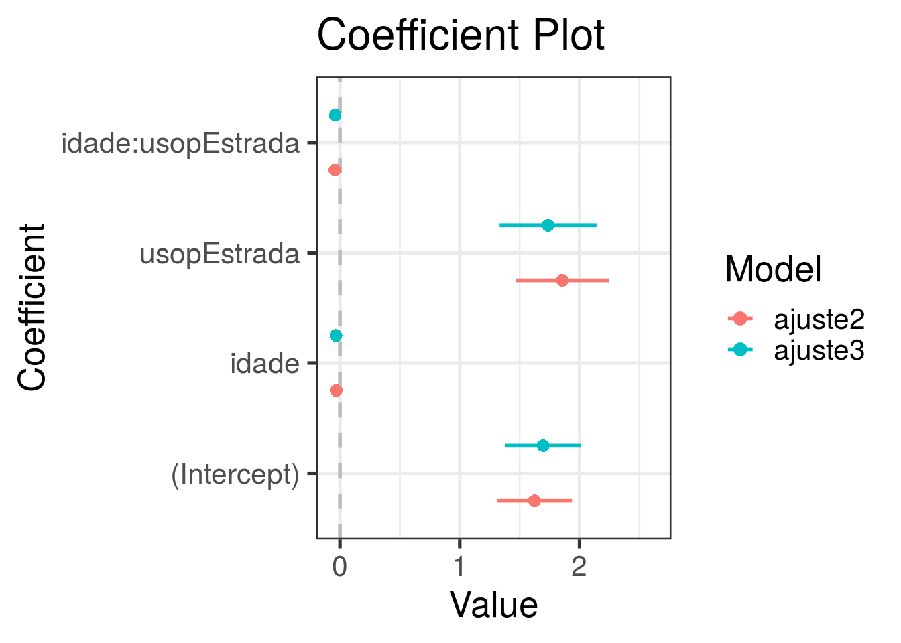

Sinistros de Automóveis (Dados de contagens)
Cesar Taconeli
Pacotes (possivelmente) utilizados
require(rattle.data)
require(ggplot2)
require(statmod)
require(ISLR)
require(car)
require(hnp)
require(pscl)
require(coefplot)
require(effects)
require(sandwich)
require(lmtest)Regressão para dados de contagens.
Informações referentes a 500 portadores de seguro de automóvel de uma particular seguradora. Foram filtrados apenas os segurados cujas apólices têm mais de cinco anos. As variáveis são as seguintes:
idade: idade do segurado (em anos);
sexo: Masc para masculino e Fem para feminino;
usop: uso principal do veículo. Cidade para uso urbano e Estrada para uso rodoviário;
anosest: escolaridade do segurado, em anos de estudo;
claims: número de sinistros produzidos pelo segurado nos últimos cinco anos.
O objetivo aqui é modelar a frequência de sinistros em função das demais covariáveis.
Importação dos dados e análise descritiva.
dados <- read.csv2('sinistros.csv')[,-1]
# dados <- read.csv2('sinistros.csv')[,-1]
head(dados, 10) # Dez primeiras linhas da base## idade sexo usop anosest claims
## 1 41 Fem Estrada 10 3
## 2 39 Masc Cidade 16 0
## 3 46 Masc Estrada 5 1
## 4 45 Fem Cidade 9 0
## 5 41 Fem Cidade 12 1
## 6 33 Masc Estrada 8 7
## 7 50 Masc Estrada 6 1
## 8 47 Masc Estrada 4 0
## 9 44 Masc Estrada 13 3
## 10 41 Masc Estrada 13 1## idade sexo usop anosest claims
## Min. :16.0 Fem :191 Cidade :237 Min. : 4.0 Min. :0.0
## 1st Qu.:35.0 Masc:309 Estrada:263 1st Qu.: 7.0 1st Qu.:1.0
## Median :40.0 Median :10.0 Median :1.0
## Mean :39.9 Mean :10.3 Mean :1.7
## 3rd Qu.:45.0 3rd Qu.:13.0 3rd Qu.:2.0
## Max. :61.0 Max. :17.0 Max. :9.0Análise descritiva
par(las = 1, mar = c(5,4.5,2,2), cex = 1.4)
plot(table(dados$claims), col = 'blue', lwd = 5, xlab = 'Número de sinistros',
ylab = 'Frequência', xaxt = 'n')
axis(1, 0:9) Distribuição de frequências para o número de sinistros.
d1 <- with(dados, data.frame(table(sexo, factor(claims, levels = 0:9))))
names(d1) <- c("sexo","claims","Freq")
ggplot(data = d1, aes(x = claims, y = Freq)) + geom_bar(stat = "identity") +
facet_wrap(~ sexo) + theme_bw(base_size = 18) + ylab("Frequência") + xlab('Número de sinistros')
d2 <- with(dados, data.frame(table(usop, factor(claims, levels = 0:9))))
names(d2) <- c("usop","claims","Freq")
ggplot(data = d2, aes(x = claims, y = Freq)) + geom_bar(stat = "identity")+
facet_wrap(~ usop) + theme_bw(base_size = 18) + ylab("Frequência") + xlab('Número de sinistros')Ajuste de um modelo linear com erros normais
Vamos ajustar um modelo de regressão linear, com erros normais, para o número de sinistros.
ajuste1 <- lm(claims ~ idade + sexo + usop + anosest, data=dados)
par(mfrow=c(2,2), cex = 1.4, las = 1, mar = c(4,4,2,2))
plot(ajuste1)Os resíduos são claramente heterocedásticos (variância aumenta conforme a média) e tem distribuição assimétrica. O modelo linear não se ajusta bem aos dados.
Ajuste de um modelo log-linear com resposta poisson
ajuste2 <- glm(claims ~ idade + sexo + usop + anosest, family = poisson(link = 'log'),
data = dados)
coefficients(ajuste2) ## (Intercept) idade sexoMasc usopEstrada anosest
## 2.699698 -0.058708 -0.016386 0.257935 -0.004463Estimativas dos parâmetros de regressão.
Vamos extrair mais alguns elementos produzidos pela função glm:
## (Intercept) idade sexoMasc usopEstrada anosest
## 1 1 41 0 1 10
## 2 1 39 1 0 16
## 3 1 46 1 1 5
## 4 1 45 0 0 9
## 5 1 41 0 0 12
## 6 1 33 1 1 8Matriz do modelo.
## 1 2 3 4 5 6 7 8 9 10
## 1.6586 1.3803 1.2440 1.0178 1.2701 2.6331 0.9793 1.1783 1.3499 1.6099Valores ajustados pelo modelo, para os 500 indivíduos da base, na escala da resposta.
## 1 2 3 4 5 6 7 8
## 0.50595 0.32227 0.21834 0.01765 0.23909 0.96816 -0.02095 0.16410
## 9 10
## 0.30005 0.47618Valores ajustados pelo modelo, para os 500 indivíduos da base, na escala do preditor.
Recomendo acessar a documentação da função predict.glm para conferir as opções. Voltaremos a ela adiante.
## [1] 5Foram necessárias cinco iterações até a convergência no processo de estimação.
## 1 2 3 4 5 6 7 8 9 10
## 1.6586 1.3803 1.2440 1.0178 1.2701 2.6331 0.9793 1.1783 1.3499 1.6099Esses são os pesos calculados na última iteração do algoritmo de estimação.
##
## Call:
## glm(formula = claims ~ idade + sexo + usop + anosest, family = poisson(link = "log"),
## data = dados)
##
## Deviance Residuals:
## Min 1Q Median 3Q Max
## -2.541 -1.035 -0.123 0.573 3.014
##
## Coefficients:
## Estimate Std. Error z value Pr(>|z|)
## (Intercept) 2.69970 0.21264 12.70 < 2e-16 ***
## idade -0.05871 0.00503 -11.68 < 2e-16 ***
## sexoMasc -0.01639 0.07779 -0.21 0.83317
## usopEstrada 0.25794 0.07644 3.37 0.00074 ***
## anosest -0.00446 0.00934 -0.48 0.63286
## ---
## Signif. codes: 0 '***' 0.001 '**' 0.01 '*' 0.05 '.' 0.1 ' ' 1
##
## (Dispersion parameter for poisson family taken to be 1)
##
## Null deviance: 733.84 on 499 degrees of freedom
## Residual deviance: 581.53 on 495 degrees of freedom
## AIC: 1579
##
## Number of Fisher Scoring iterations: 5Um resumo mais detalhado do modelo ajustado.
## (Intercept) idade sexoMasc usopEstrada anosest
## (Intercept) 0.0452144 -9.164e-04 -1.671e-03 -2.056e-03 -7.660e-04
## idade -0.0009164 2.527e-05 -1.217e-05 1.444e-05 -2.134e-06
## sexoMasc -0.0016713 -1.217e-05 6.052e-03 -2.384e-03 -2.796e-05
## usopEstrada -0.0020562 1.444e-05 -2.384e-03 5.844e-03 -4.182e-05
## anosest -0.0007660 -2.134e-06 -2.796e-05 -4.182e-05 8.729e-05matriz de variâncias e covariâncias estimada para os parâmetros de regressão.
Para fins disáticos, vamos estimar o parâmetro de dispersão. Primeiro usando a estatística X^2 de Pearson.
## [1] 1.043Agora usando a deviance.
## [1] 1.175Inferências e qualidade do ajuste.
Teste da razão de verossimilhanças
Vamos testar algumas hipóteses usando o TRV. Vamos denotar por B_… os parâmetros (betas) do modelo.
Hipótese 1- H0: BsexoMasc = 0.
ou, de forma abreviada:
Na mão:
Vamos extrair as log-verossimilhanças maximizadas sob os dois modelos:
## [1] -784.3## [1] -784.3A estatística do teste da razão de verossimilhanças fica dada por:
## [1] 0.04432Como estamos testando um único parâmetro, a distribuição de referência para o teste é a qui-quadrado com um grau de liberdade. Vamos obter o valor crítico para um nível de significância de 5%:
## [1] 3.841Como o valor da estatística do teste não excede o valor crítico, a hipótese nula (não efeito de sexo) não é rejeitada ao nível de significância de 5%. Vamos calcular o p-valor do teste.
## [1] 0.8333Usando a função anova:
## Analysis of Deviance Table
##
## Model 1: claims ~ idade + usop + anosest
## Model 2: claims ~ idade + sexo + usop + anosest
## Resid. Df Resid. Dev Df Deviance Pr(>Chi)
## 1 496 582
## 2 495 582 1 0.0443 0.83Exercício: Aplicar o teste da razão de verossimilhanças no teste da hipótese nula H0: B_sexoMasc = B_anosest = 0.
Teste de Wald.
O resultado do teste de Wald, para cada parâmetro, já é apresentado no summary do modelo. Vamos aplicar o método de Wald para testar a hipótese H0: B_sexoMasc = B_anosest = 0.
Na mão. Começamos extraindo estimativas pontuais e a parte da matriz de variâncias e covariâncias referentes aos dois parâmetros sob teste.
## [,1]
## [1,] -0.016386
## [2,] -0.004463## sexoMasc anosest
## sexoMasc 6.052e-03 -2.796e-05
## anosest -2.796e-05 8.729e-05Agora, vamos calcular a estatística do teste de Wald:
## [,1]
## [1,] 0.2807Como estamos testando dois parâmetro, a distribuição de referência para o teste é a qui-quadrado com dois graus de liberdade. Vamos obter o valor crítico para um nível de significância de 5%:
## [1] 5.991Como o valor da estatística do teste não excede o valor crítico, a hipótese nula (não efeito de sexo e escolaridade) não é rejeitada ao nível de significância de 5%. Vamos calcular o p-valor do teste.
## [,1]
## [1,] 0.869Agora, vamos usar a função waldtest do pacote lmtest:
## Wald test
##
## Model 1: claims ~ idade + usop
## Model 2: claims ~ idade + sexo + usop + anosest
## Res.Df Df Chisq Pr(>Chisq)
## 1 497
## 2 495 2 0.28 0.87Exercício: Aplicar o método de Wald no teste da hipótese nula H0: B_sexoMasc = B_idade = 0.
Intervalos de confiança
Agora, intervalos de confiança. Começando pelo método de Wald. Vamos obter um intervalo de 95% de confiança para B_idade:
## idade
## -0.05871## [1] 2.527e-05## idade idade
## -0.06856 -0.04885Como alternativa, podemos usar a função confint.default:
## 2.5 % 97.5 %
## idade -0.06856 -0.04885## 0.5 % 99.5 %
## idade -0.07166 -0.04576## 2.5 % 97.5 %
## (Intercept) 2.28294 3.11646
## idade -0.06856 -0.04885
## sexoMasc -0.16886 0.13609
## usopEstrada 0.10811 0.40776
## anosest -0.02278 0.01385Se quisermos um IC(95%) para exp(B_idade), basta exponenciar os limites do IC obtido para B_idade:
## idade idade
## 0.9337 0.9523Procedimento semelhante valeria para qualquer outra função monótona de B_idade.
Vamos ilustrar agora a construção do IC baseado no perfil da verossimilhança. Para isso, precisamos obter o valor da (log) verossimilhança maximizada para um grid de valores de
Agora, para cada valor de B_idade em B_idade_grid vamos ajustar novamente o glm, mas fixando B_idade. Para cada ajuste vamos extrair o valor da log-verossimilhança maximizada. Antes, vamos aplicar esse procedimento a um particular valor de B_idade, para fins ilustrativos. Tomemos B_idade=-0.05.
ajuste <- glm(claims ~ offset(-0.05 * idade) + usop + anosest + sexo, family = poisson(link = 'log'),
data = dados)
logLik(ajuste)## 'log Lik.' -785.8 (df=4)log-verossimilhança maximizada para B_idade=-0.05. Agora, vamos aplicar igual procedimento para o grid de valores de B_idade.
vet_logLik <- numeric()
for(i in 1:length(B_idade_grid)){
B_idade <- B_idade_grid[i]
ajuste <- glm(claims ~ offset(B_idade * idade) + usop + anosest + sexo, family = poisson(link = 'log'),
data = dados)
vet_logLik[i] <- logLik(ajuste)
}O argumento offset() acrescenta o termo correspondente ao preditor do modelo sem um parâmetro a ser estimado. É a forma usada para fixar o valor de beta em cada componente de B_idade_grid.
Agora, vamos calcular a estatística do teste da razão de verossimilhanças para cada valor de B_idade_grid.
par(cex = 1.4, las = 1)
plot(B_idade_grid, vet_logLik, type = 'b', pch = 20, xlav = 'B_idade', ylab = 'Log-verossimilhança')Gráfico do perfil da log-verossimilhança.
O intervalo de confiança 95% baseado no perfil da verossimilhança irá conter todos os valores de B_idade0 tais que -2*[l(B_idade0) - l(B_idade_chap)] < 3.84, em que l(B_idade0) é a log-verossimilhança maximizada fixando
B_idade em B_idade0, l(B_idade_chap) é a log-verossimilhança maximizada não fixando qualquer particular valor para B_idade e 3.84 é o quantil 0.95 da distribuição qui-quadrado com um grau de liberdade.
par(cex = 1.4, las = 1)
plot(B_idade_grid, vet_logLik, type = 'b', pch = 20, xlav = 'B_idade', ylab = 'Log-verossimilhança')
abline(h = logLik(ajuste2) - 3.84/2)Podemos calcular o IC baseado no perfil da verossimilhança usando a função confint:
## Waiting for profiling to be done...## 2.5 % 97.5 %
## -0.06856 -0.04885## Waiting for profiling to be done...## 0.5 % 99.5 %
## -0.07165 -0.04575## Waiting for profiling to be done...## 2.5 % 97.5 %
## (Intercept) 2.28162 3.11524
## idade -0.06856 -0.04885
## sexoMasc -0.16817 0.13686
## usopEstrada 0.10862 0.40834
## anosest -0.02280 0.01383Agora, para fins ilustrativos, vamos plotar os limites de confiança sobre o gráfico.
par(cex = 1.4, las = 1)
plot(B_idade_grid, vet_logLik, type = 'b', pch = 20, xlav = 'B_idade', ylab = 'Log-verossimilhança')
abline(h = logLik(ajuste2) - 3.84/2)
abline(v = c(-0.06855816, -0.04885103), lty = 2, col = 'red')Exercício: Construir o gráfico do perfil da verossimilhança e obter o IC(95%) para B_sexoM.
Gráficos de efeitos
Predições
Agora, vamos estimar o número médio de sinistros para alguns perfis de segurados. Primeiro, para segurados de 30 anos que fazem uso principal na estrada, sexo masculino e 10 anos de estudo.
x0 Vetor de covariáveis. o primeiro termo corresponde ao intercepto.
## [,1]
## [1,] 2.699698
## [2,] -0.058708
## [3,] -0.016386
## [4,] 0.257935
## [5,] -0.004463## [,1]
## [1,] 1.135## [,1]
## [1,] 3.112Estimativa na escala da média. Assim, para o perfil de segurado considerado, estima-se, em média, 3.11 sinistros.
Agora, vamos usar a função predict.
## 1
## 1.135Por default, o R retorna a predição na escala do link. Para obter a estimativa da média devemos aplicar a inversa da função de ligação:
predict(ajuste2, newdata = data.frame(idade = 30, usop = 'Estrada', sexo = 'Masc',
anosest = 10), type = 'response')## 1
## 3.112Agora, na escala da média, ou da resposta.
Podemos realizar predições para toda uma base de novos indivíduos. Uma pequena ilustração:
dpred <- data.frame(idade = c(30,30,60,60),
usop = c('Estrada','Cidade','Estrada','Cidade'),
sexo = c('Masc', 'Fem', 'Fem', 'Masc'),
anosest = c(5, 7, 12, 15))
mu_est <- predict(ajuste2, newdata = dpred, type = 'response')
dpred$mu <- mu_est
rownames(dpred) <- c('Perfil 1', 'Perfil 2', 'Perfil 3', 'Perfil 4')
dpred## idade usop sexo anosest mu
## Perfil 1 30 Estrada Masc 5 3.1825
## Perfil 2 30 Cidade Fem 7 2.4774
## Perfil 3 60 Estrada Fem 12 0.5388
## Perfil 4 60 Cidade Masc 15 0.4041Estimativas para o número esperado de sinistros em cinco anos para os quatro perfis de segurados.
Vamos ver a distribuição de probabilidades estimada para cada perfil. Primeiro, vamos calcular as probabilidades ajustadas, usando as médias estimadas para cada perfil.
Perfil1 <- dpois(0:10, mu_est[1])
Perfil2 <- dpois(0:10, mu_est[2])
Perfil3 <- dpois(0:10, mu_est[3])
Perfil4 <- dpois(0:10, mu_est[4])Agora vamos plotar as probabilidades para avaliar as distribuições.
par(mfrow = c(2,2), cex = 1.3, las = 1, mar = c(5,4,2,2), las = 1)
plot(0:10, Perfil1, type = 'h', lwd = 3, xlab = 'x', main = 'Perfil 1',
xaxt = 'n', ylim = c(0, 0.7))
axis(1, 0:10)
plot(0:10, Perfil2, type = 'h', lwd = 3, xlab = 'x', main = 'Perfil 2',
xaxt = 'n', ylim = c(0, 0.7))
axis(1, 0:10)
plot(0:10, Perfil3, type = 'h', lwd = 3, xlab = 'x', main = 'Perfil 3',
xaxt = 'n', ylim = c(0, 0.7))
axis(1, 0:10)
plot(0:10, Perfil4, type = 'h', lwd = 3, xlab = 'x', main = 'Perfil 4',
xaxt = 'n', ylim = c(0, 0.7))
axis(1, 0:10)Intervalos de confiança para predições. Vamos considerar, novamente, de 30 anos que fazem uso principal na estrada, sexo masculino e 10 anos de estudo.
Primeiro na unha.
x0 <- matrix(c(1, 30, 1, 1, 10)) # Vetor de covariáveis.
# Intercepto, idade, indicadora de uso na estrada e produto (idade*uso).
betaChap <- coef(ajuste2)
# Vetor de estimativas dos parâmetros de regressão.
etaChap <- crossprod(x0, betaChap)
# Predição na escala do preditor.
varChap <- vcov(ajuste2)
# Matriz de variâncias e covariâncias estimada para os estimadores dos parâmetros de regressão.
VarEtaChap <- t(x0) %*% varChap %*% x0
# Erro padrão de etaChap.
c(etaChap -1.96 * sqrt(VarEtaChap), etaChap +1.96 * sqrt(VarEtaChap))## [1] 1.019 1.252# IC 95% (na escala do preditor)
exp(c(etaChap -1.96 * sqrt(VarEtaChap), etaChap +1.96 * sqrt(VarEtaChap))) ## [1] 2.771 3.496Agora, usando a função predict.
pred_link <- predict(ajuste2, newdata = data.frame(idade = 30, usop = 'Estrada', sexo = 'Masc',
anosest = 10), se.fit = TRUE)Declarando se.fit = TRUE, a função retorna também o erro padrão de predição. pred_link
## [1] 1.019 1.252IC 95% (na escala do preditor)
## [1] 2.771 3.496IC 95% (na escala da resposta)
Agora, vamos obter intervalos de confiança para a frequência média de sinistros no atacado, considerando todos os vetores de covariáveis correspondentes aos 500 indivíduos da base.
pred_base <- predict(ajuste2, type = 'link', se.fit = TRUE)
ic <- cbind(pred_base$fit - 1.96 * pred_base$se.fit, pred_base$fit + 1.96 * pred_base$se.fit)
dados_inter <- data.frame(dados[,1:4], exp(pred_base$fit), exp(ic))
head(dados_inter, n = 10)## idade sexo usop anosest exp.pred_base.fit. X1 X2
## 1 41 Fem Estrada 10 1.6586 1.4197 1.938
## 2 39 Masc Cidade 16 1.3803 1.1556 1.649
## 3 46 Masc Estrada 5 1.2440 1.0545 1.468
## 4 45 Fem Cidade 9 1.0178 0.8804 1.177
## 5 41 Fem Cidade 12 1.2701 1.1113 1.452
## 6 33 Masc Estrada 8 2.6331 2.3582 2.940
## 7 50 Masc Estrada 6 0.9793 0.8174 1.173
## 8 47 Masc Estrada 4 1.1783 0.9815 1.415
## 9 44 Masc Estrada 13 1.3499 1.1934 1.527
## 10 41 Masc Estrada 13 1.6099 1.4419 1.797Base de dados acompanhada das estimativas para a frequência média de sinistros e IC(95%).
Análise de deviance
Modelo nulo - modelo só com intercepto (um único parâmetro, comum a todas as observações)
##
## Call:
## glm(formula = claims ~ 1, family = poisson(link = "log"), data = dados)
##
## Deviance Residuals:
## Min 1Q Median 3Q Max
## -1.843 -0.581 -0.581 0.225 3.926
##
## Coefficients:
## Estimate Std. Error z value Pr(>|z|)
## (Intercept) 0.5295 0.0343 15.4 <2e-16 ***
## ---
## Signif. codes: 0 '***' 0.001 '**' 0.01 '*' 0.05 '.' 0.1 ' ' 1
##
## (Dispersion parameter for poisson family taken to be 1)
##
## Null deviance: 733.84 on 499 degrees of freedom
## Residual deviance: 733.84 on 499 degrees of freedom
## AIC: 1723
##
## Number of Fisher Scoring iterations: 5## 'log Lik.' -860.4 (df=1)## [1] 733.8Modelo saturado - modelo com n parâmetros (um para cada observação)
obs <- factor(1:nrow(dados))
ajusteSat <- glm(claims ~ obs, family=poisson(link='log'),data=dados)
logLik(ajusteSat) # log verossimilhança maximizada.## 'log Lik.' -493.5 (df=500)## [1] 3.166e-10Para o modelo ajustado com as quatro covariáveis:
## 'log Lik.' -784.3 (df=5)## [1] 581.5Análise de deviance
## Analysis of Deviance Table
##
## Model: poisson, link: log
##
## Response: claims
##
## Terms added sequentially (first to last)
##
##
## Df Deviance Resid. Df Resid. Dev Pr(>Chi)
## NULL 499 734
## idade 1 139.2 498 595 < 2e-16 ***
## sexo 1 1.5 497 593 0.21372
## usop 1 11.4 496 582 0.00075 ***
## anosest 1 0.2 495 582 0.63276
## ---
## Signif. codes: 0 '***' 0.001 '**' 0.01 '*' 0.05 '.' 0.1 ' ' 1Repare na sequência de testes que são realizados: 1- Inclusão de idade ao modelo nulo (altamente significativa); 2- Inclusão de sexo ao modelo com idade (não significativa); 3- Inclusão de uso principal ao modelo com idade e sexo (altamente significativa); 4- Inclusão de anos de estudo ao modelo com as demais variáveis (não significativa).
## Analysis of Deviance Table (Type II tests)
##
## Response: claims
## LR Chisq Df Pr(>Chisq)
## idade 135.8 1 < 2e-16 ***
## sexo 0.0 1 0.83326
## usop 11.5 1 0.00069 ***
## anosest 0.2 1 0.63276
## ---
## Signif. codes: 0 '***' 0.001 '**' 0.01 '*' 0.05 '.' 0.1 ' ' 1Repare na sequência de testes que são realizados: 1- Inclusão de idade ao modelo com as demais três variáveis (altamente significativa); 2- Inclusão de sexo ao modelo com as demais três variáveis (não significativa); 3- Inclusão de uso principal ao modelo com as demais três variáveis (altamente significativa); 4- Inclusão de anos de estudo ao modelo com as demais três variáveis (não significativa).
Experimente entrar na função glm com as variáveis em outra ordem e usar anova e Anova. Observe o que muda.
## Single term deletions
##
## Model:
## claims ~ idade + sexo + usop + anosest
## Df Deviance AIC LRT Pr(>Chi)
## <none> 582 1579
## idade 1 717 1712 135.8 < 2e-16 ***
## sexo 1 582 1577 0.0 0.83326
## usop 1 593 1588 11.5 0.00069 ***
## anosest 1 582 1577 0.2 0.63276
## ---
## Signif. codes: 0 '***' 0.001 '**' 0.01 '*' 0.05 '.' 0.1 ' ' 1Elimina uma variável por vez do modelo e testa a exclusão da variável via TRV. (similar a Anova) Não se verifica alteração significativa no ajuste resultante da exclusão do sexo, nem da exclusão dos anos de estudo. Para as outras duas, há fortes evidências que idade e uso principal estejam relacionadas ao número de sinistros.
Vamos explorar um pouco mais a parte de testes de hipóteses. Novamente, vamos testar o efeito de escolaridade e sexo, conjuntamente.
Modelo sob a restrição.
## Analysis of Deviance Table
##
## Model 1: claims ~ idade + usop
## Model 2: claims ~ idade + sexo + usop + anosest
## Resid. Df Resid. Dev Df Deviance Pr(>Chi)
## 1 497 582
## 2 495 582 2 0.281 0.87Não há efeito significativo de escolaridade e sexo. Podemos removê-las do modelo ajustado. Adicionalmente, vamos avaliar se há efeito de interação entre as variáveis remanescentes (uso principal e idade).
## Analysis of Deviance Table
##
## Model 1: claims ~ idade + usop
## Model 2: claims ~ idade + usop + idade:usop
## Resid. Df Resid. Dev Df Deviance Pr(>Chi)
## 1 497 582
## 2 496 564 1 17.7 2.6e-05 ***
## ---
## Signif. codes: 0 '***' 0.001 '**' 0.01 '*' 0.05 '.' 0.1 ' ' 1O efeito de interação é significativo. Fica como exercício explorar esse ajuste (escrever a expressão do modelo ajustado, apresentar algumas inferências e interpretações, fazer predições). Apenas adiantando, segue o resumo do ajuste.
##
## Call:
## glm(formula = claims ~ idade + usop + idade:usop, family = poisson(link = "log"),
## data = dados)
##
## Deviance Residuals:
## Min 1Q Median 3Q Max
## -2.730 -1.014 -0.144 0.559 2.788
##
## Coefficients:
## Estimate Std. Error z value Pr(>|z|)
## (Intercept) 1.62408 0.31340 5.18 2.2e-07 ***
## idade -0.03164 0.00803 -3.94 8.1e-05 ***
## usopEstrada 1.85696 0.38770 4.79 1.7e-06 ***
## idade:usopEstrada -0.04303 0.01014 -4.24 2.2e-05 ***
## ---
## Signif. codes: 0 '***' 0.001 '**' 0.01 '*' 0.05 '.' 0.1 ' ' 1
##
## (Dispersion parameter for poisson family taken to be 1)
##
## Null deviance: 733.84 on 499 degrees of freedom
## Residual deviance: 564.13 on 496 degrees of freedom
## AIC: 1559
##
## Number of Fisher Scoring iterations: 5Análise de deviance - avaliação da qualidade do ajuste.
Vamos usar este modelo para avaliar a qualidade do ajuste com base na deviance residual. Vamos usar, a princípio, a aproximação com a distribuição qui-quadrado com n-p (496) graus de liberdade.
## [1] 564.1Deviance residual (estatística do teste da qualidade do ajuste).
## [1] 548.9Valor crítico.
Como a deviance excede o valor crítico, rejeitaríamos ao nível de significância de 5%, a hipótese nula de que o modelo ajustado está corretamente especificado. Vamos ver o valor-p do teste:
## [1] 0.01821p = 0.018, reforçando a evidência de que o modelo não é adequado. No entanto, é bem conhecido que a aproximação da deviance pela distribuição qui-quadrado (n-p), sob a hipótese nula de que o modelo é correto, nem sempre é apropriada. Então, como alternativa, vamos obter a distribuição sob H0 via simulação.
Para isso, precisamos simular dados sob a hipótese nula, de que o modelo é correto. Como fazemos isso?
Considere a primeira linha da base:
## idade sexo usop anosest claims
## 1 41 Fem Estrada 10 3Para esse indivíduo, o valor ajustado pelo modelo é dado por:
## 1
## 1.522Podemos simular uma resposta para essa observação, a partir do modelo, da seguinte forma:
## [1] 1pronto. este valor foi simulado do modelo. Da mesma forma podemos simular uma observação para cada linha da base:
## [1] 3 4 2 1 0 4 1 0 0 0 4 3 1 2 4 2 5 3 2 3 6 2 1
## [24] 3 0 1 2 1 0 2 1 0 0 3 1 2 0 1 2 1 4 3 3 1 0 2
## [47] 1 1 2 2 1 2 1 2 4 1 4 3 1 2 0 2 0 1 4 2 0 2 0
## [70] 2 3 1 2 1 0 2 1 2 1 0 0 1 0 1 2 1 0 1 0 0 3 4
## [93] 0 2 2 2 1 1 2 2 2 2 2 0 3 4 1 0 0 2 4 1 3 1 2
## [116] 0 2 1 0 0 1 2 1 1 1 1 1 2 0 0 1 4 1 1 1 3 0 1
## [139] 3 2 0 1 2 0 1 2 4 2 1 1 1 6 2 1 1 0 3 1 0 1 1
## [162] 1 0 2 2 1 0 2 3 1 2 1 1 2 0 2 1 1 1 0 0 6 2 3
## [185] 2 1 0 2 0 4 3 1 0 1 1 2 1 2 1 1 3 0 5 0 9 1 0
## [208] 0 2 1 2 2 0 2 1 2 2 0 0 1 0 2 1 3 2 1 2 1 5 0
## [231] 1 0 0 1 2 1 2 1 2 0 3 2 1 3 2 0 0 4 0 3 2 3 2
## [254] 2 4 1 2 4 0 0 4 1 2 1 1 5 2 0 0 0 2 4 2 1 2 1
## [277] 3 3 1 3 0 2 4 1 2 0 1 3 1 2 2 0 5 2 11 4 0 3 4
## [300] 1 0 1 8 1 0 2 0 2 11 0 1 1 3 2 3 1 2 2 1 2 5 2
## [323] 1 1 2 1 1 6 1 0 1 2 0 2 2 2 0 2 4 4 2 0 2 3 2
## [346] 4 1 1 1 2 4 3 1 1 5 0 3 2 1 2 4 1 2 1 0 0 2 1
## [369] 0 2 1 1 0 0 2 0 4 1 0 1 0 0 2 4 1 0 2 2 1 1 4
## [392] 1 0 2 1 3 2 0 3 0 2 1 1 1 4 2 4 1 0 1 3 5 1 3
## [415] 0 3 0 1 4 1 5 2 2 2 0 1 1 2 2 3 1 1 1 1 7 1 1
## [438] 3 2 1 5 1 1 3 1 0 2 1 1 1 3 2 0 3 2 2 0 0 3 3
## [461] 3 1 2 3 0 2 1 0 2 4 4 1 3 2 3 1 2 5 5 2 0 2 0
## [484] 1 0 5 1 6 0 1 1 1 4 1 5 3 2 1 1 3Agora, usamos esse vetor de respostas em substituição ao vetor original no ajuste do modelo.
ajuste2Sim <- glm(y~ idade + anosest + usop + sexo, family = poisson, data = dados)
deviance(ajuste2Sim)## [1] 566.3Esta é uma deviance simulada sob H0. Para construir a distribuição empírica sob H0, temos que repetir a simulação um grande número de vezes (digamos 1000).
for(i in 1:1000){
dados$y <- rpois(500, fitted(ajuste2))
ajuste2Sim <- glm(y~ idade + anosest + usop + sexo, family = poisson, data = dados)
vet_deviance[i] <- deviance(ajuste2Sim)
}
hist(vet_deviance)
abline(v = ajuste2$deviance, col = 'red')Fica bem evidente que o valor calculado da deviance não é atípico ou extremo em relação aos valores simulados sob H0, o que é um indicativo de que o modelo se ajusta bem aos dados. Vamos calcular o p-valor com base na distribuição empírica, pela proporção de valores simulados que excedem o valor original da deviance.
## [1] 0.723Ou seja, não temos evidência de falta de ajuste do modelo.
Diagnóstico do ajuste
Os resíduos utlizados ao plotar um objeto da classe glm são os resíduos componentes da deviance. Nem sempre esses resíduos têm boa aproximação com a distribuição normal se o modelo ajustado estiver correto. Isso ocorre, particularmente, para dados binários ou de contagens. Esse fato será verificado através de um novo estudo por simulação, apresentado ao final dos scripts. Voltando à análise dos dados, é possível notar comportamento mais aceitável (variância mais homogênea, melhor aproximação com a distribuição Normal) em relação ao que foi verificado para o modelo linear.
para uma melhor apreciação do comportamento dos resíduos, vamos proceder com a análise dos resíduos quantílicos aleatorizados e a obtenção do gráfico meio normal com envelopes simulados.
require(statmod)
residuos <- qres.pois(ajuste2)
ajustados <- predict(ajuste2)
par(las = 1, mar = c(4,4,2,2), mfrow = c(1,2), cex = 1.4)
plot(residuos ~ ajustados, col = 'blue', xlab = 'Valores ajustados', ylab = 'Resíduos')
lines(lowess(residuos ~ ajustados), col = 'red', lwd = 2)
qqnorm(residuos, col = 'blue', main = '')
qqline(residuos, lty = 2)A curvatura da função suave, presente no gráfico à esquerda, é resultante da pequena quantidade de pontos nos extremos dos valores ajustados. De qualquer forma, fica evidente que os resíduos tem dispersão aproxim. constante e boa aproximação com a distribuição Normal.
##
## Shapiro-Wilk normality test
##
## data: residuos
## W = 1, p-value = 0.5A hipótese nula de normalidade não é rejeitada.
Como alternativa, vamos usar os gráficos meio normais com envelopes simulados.
## Poisson modelO gráfico indica que o modelo se ajusta bem aos dados.
Gráficos de resíduos parciais Usando recursos de diagnóstico do pacote car:
Gráficos de resíduos parciais

## Test stat Pr(>|Test stat|)
## idade 0.28 0.6
## usopGráfico de resíduos versus variáveis ajustadas no modelo.
Diagnóstico de outliers e pontos influentes.
Vamos fazer uma análise de influência usando recursos do pacote car.
O gráfico dos resíduos studentizados não indica observações com resíduos extremos. O gráfico da distância de Cook tem dois pontos mais discrepantes: 15 e 385. O gráfico dos valores de h aponta a observação 295 como possível ponto de alavanca.
Vamos avaliar os dados destacados na análise.
## idade sexo usop anosest claims y
## 15 29 Masc Estrada 6 9 11## idade sexo usop anosest claims y
## 295 16 Masc Estrada 16 9 14## idade sexo usop anosest claims y
## 385 47 Fem Cidade 14 5 1Vamos ver o summary dos dados e do ajuste para entender melhor o por que desse dados serem destacados.
## idade sexo usop anosest claims
## Min. :16.0 Fem :191 Cidade :237 Min. : 4.0 Min. :0.0
## 1st Qu.:35.0 Masc:309 Estrada:263 1st Qu.: 7.0 1st Qu.:1.0
## Median :40.0 Median :10.0 Median :1.0
## Mean :39.9 Mean :10.3 Mean :1.7
## 3rd Qu.:45.0 3rd Qu.:13.0 3rd Qu.:2.0
## Max. :61.0 Max. :17.0 Max. :9.0
## y
## Min. : 0.00
## 1st Qu.: 1.00
## Median : 1.00
## Mean : 1.79
## 3rd Qu.: 2.00
## Max. :14.00##
## Call:
## glm(formula = claims ~ idade + usop + idade:usop, family = poisson(link = "log"),
## data = dados)
##
## Deviance Residuals:
## Min 1Q Median 3Q Max
## -2.730 -1.014 -0.144 0.559 2.788
##
## Coefficients:
## Estimate Std. Error z value Pr(>|z|)
## (Intercept) 1.62408 0.31340 5.18 2.2e-07 ***
## idade -0.03164 0.00803 -3.94 8.1e-05 ***
## usopEstrada 1.85696 0.38770 4.79 1.7e-06 ***
## idade:usopEstrada -0.04303 0.01014 -4.24 2.2e-05 ***
## ---
## Signif. codes: 0 '***' 0.001 '**' 0.01 '*' 0.05 '.' 0.1 ' ' 1
##
## (Dispersion parameter for poisson family taken to be 1)
##
## Null deviance: 733.84 on 499 degrees of freedom
## Residual deviance: 564.13 on 496 degrees of freedom
## AIC: 1559
##
## Number of Fisher Scoring iterations: 5O indivíduo 15 gerou nove sinistros, sendo o segurado com maior número de sinistros;
O indivíduo 385 tem 47 anos e usa o carro na cidade, mas registrou um número elevado de sinistros (cinco).
O indivíduo 295 é atípico, tem 16 anos de idade e 16 de estudo!!! Deve ser erro de registro.
Vamos tirar da base as observações 15, 295 e 385 e reajustar o modelo.
## Calls:
## 1: glm(formula = claims ~ idade + usop + idade:usop, family =
## poisson(link = "log"), data = dados)
## 2: glm(formula = claims ~ idade + usop + idade:usop, family =
## poisson(link = "log"), data = dados, subset = -c(15, 295, 385))
##
## Model 1 Model 2
## (Intercept) 1.624 1.696
## SE 0.313 0.316
##
## idade -0.03164 -0.03381
## SE 0.00803 0.00812
##
## usopEstrada 1.857 1.737
## SE 0.388 0.405
##
## idade:usopEstrada -0.0430 -0.0398
## SE 0.0101 0.0106
## 
Comparação de estimativas e erros padrões produzidos pelos dois modelos. Os resultados (e, consequentemente, as inferências) não mudam de forma substancial ao remover as três informações da base.